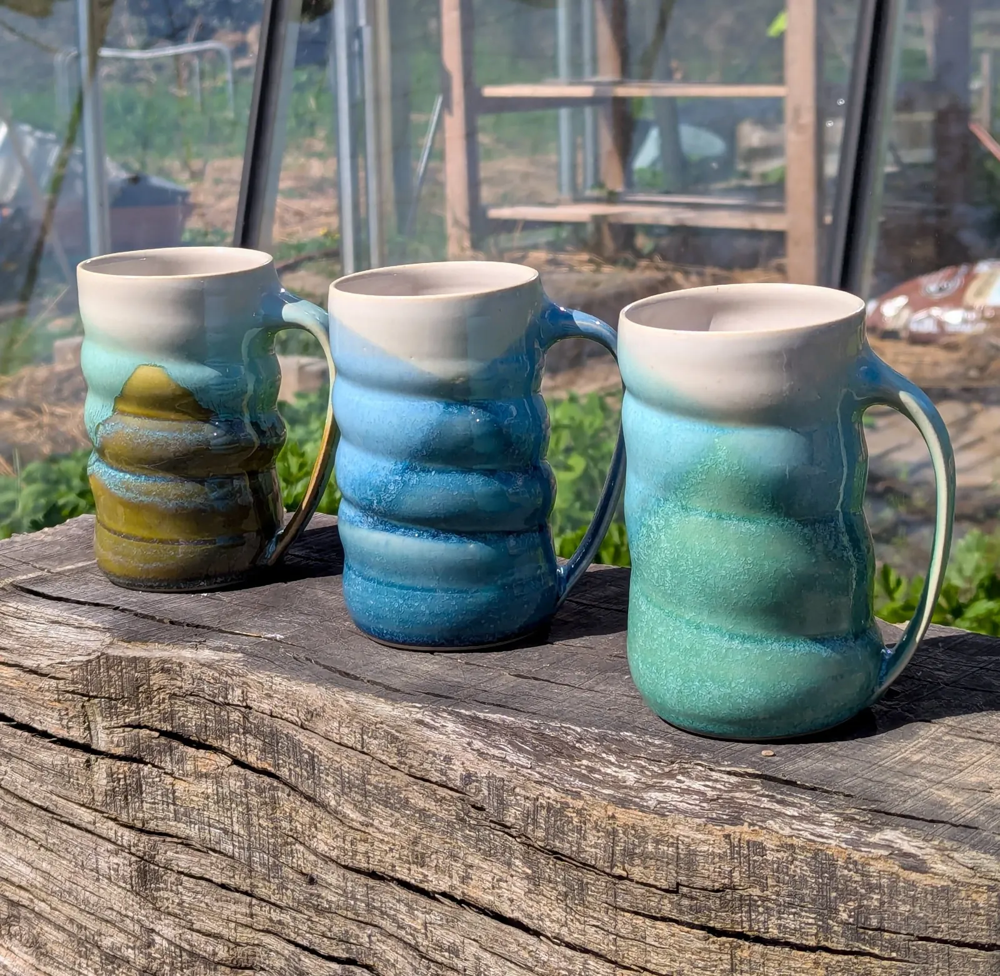
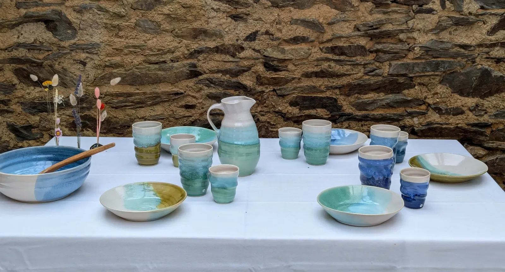
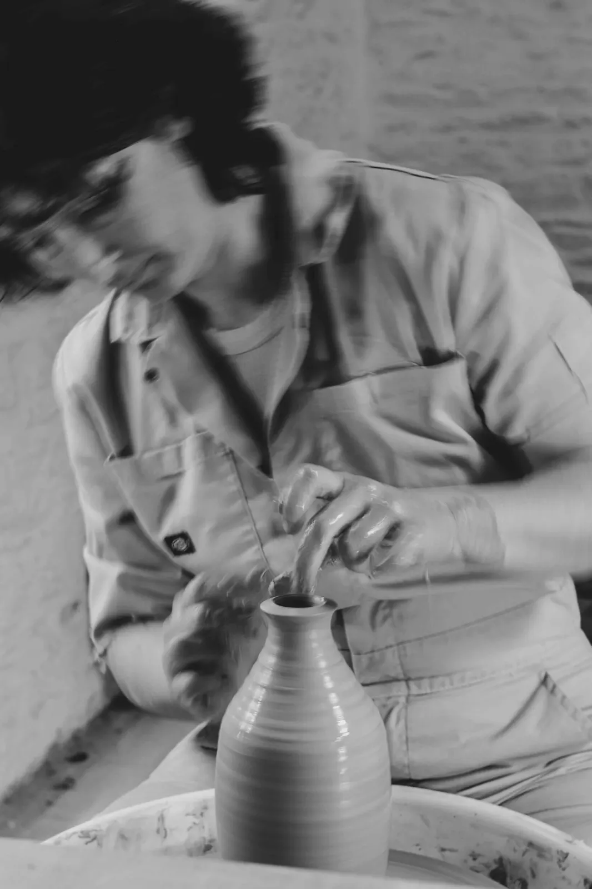
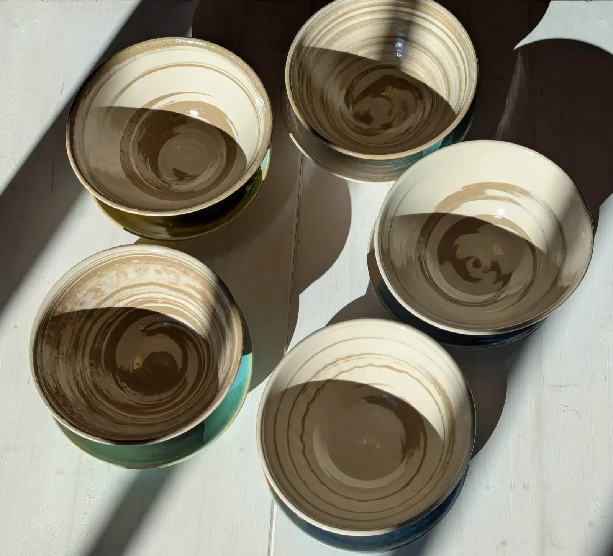
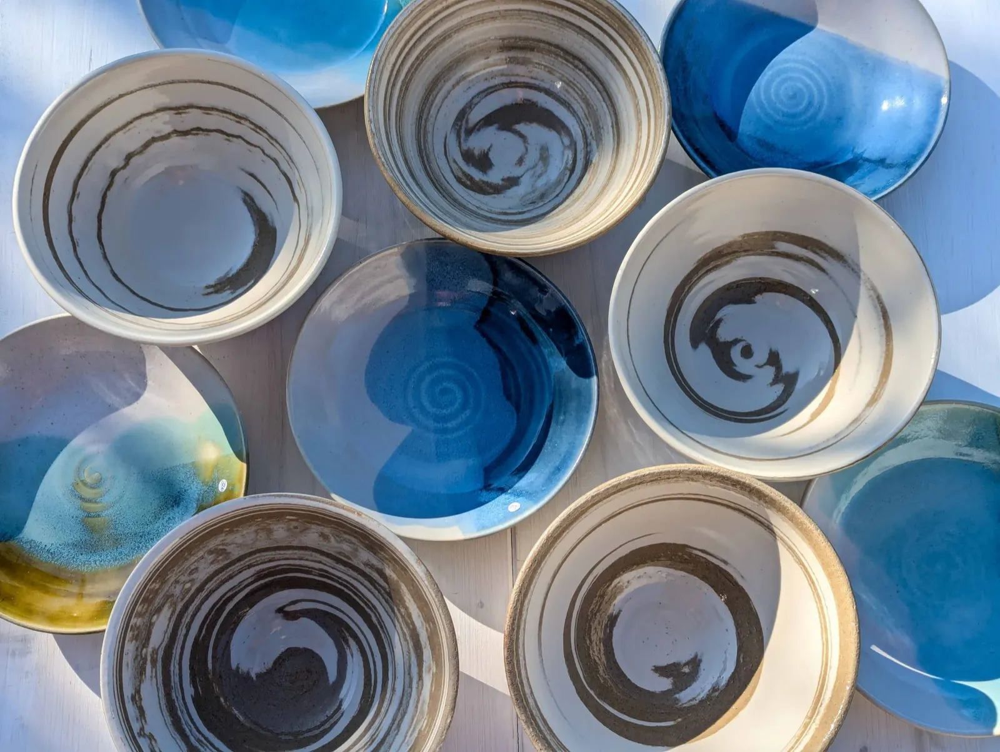
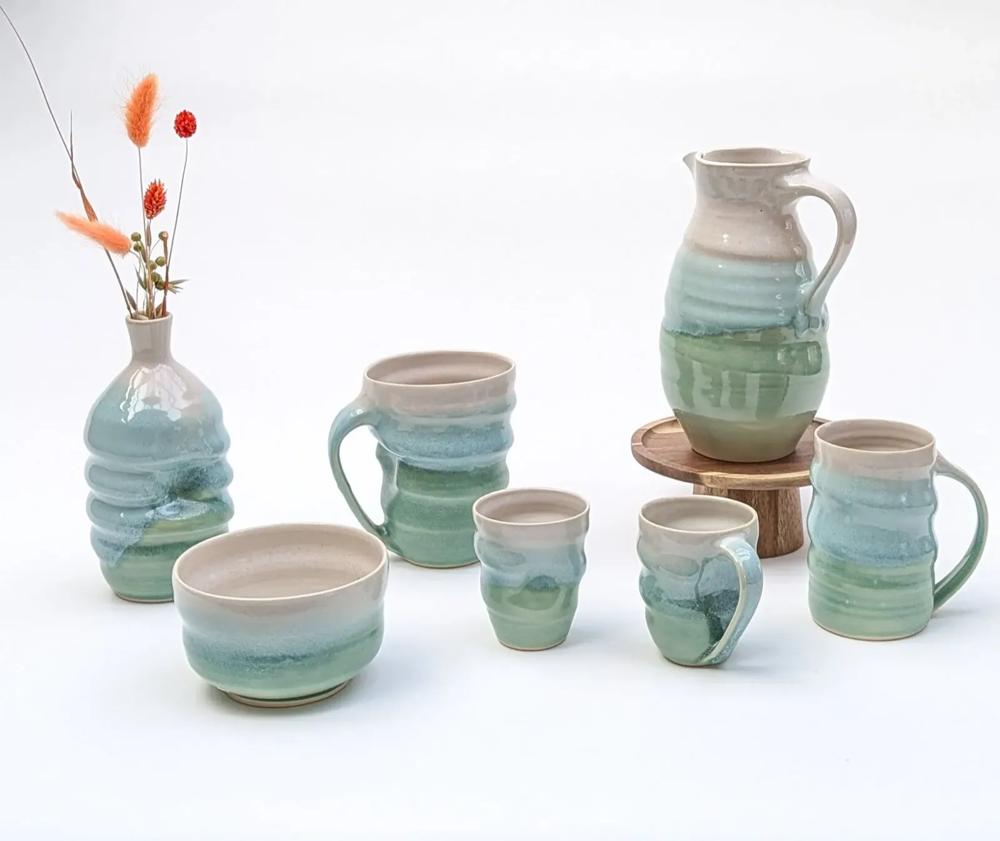
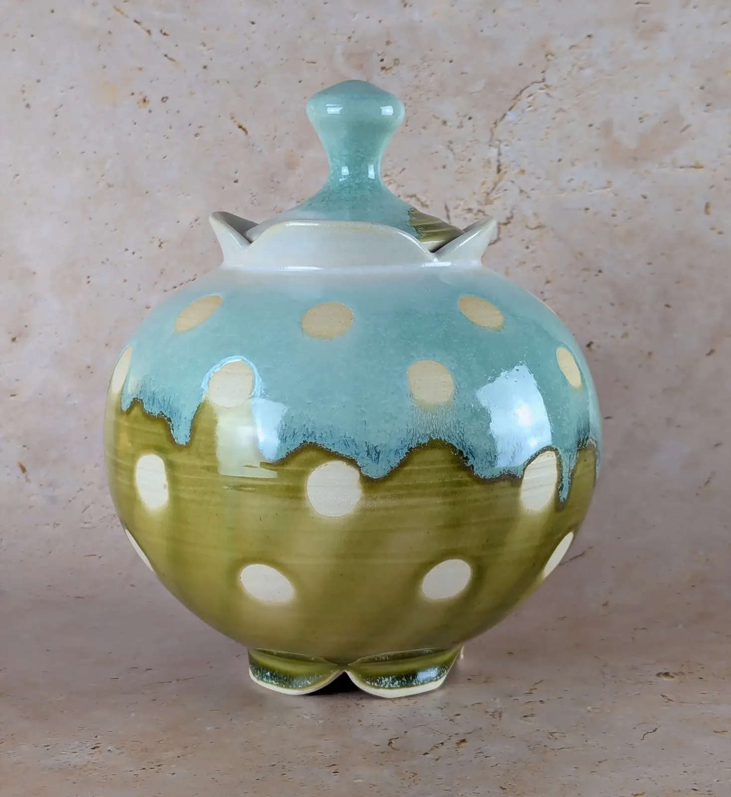
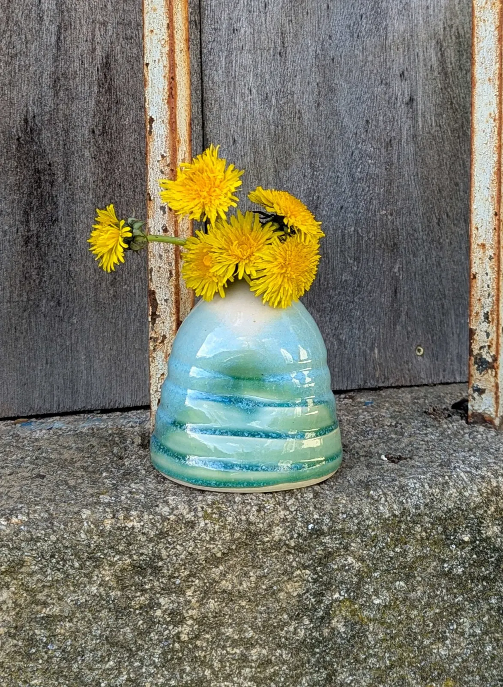
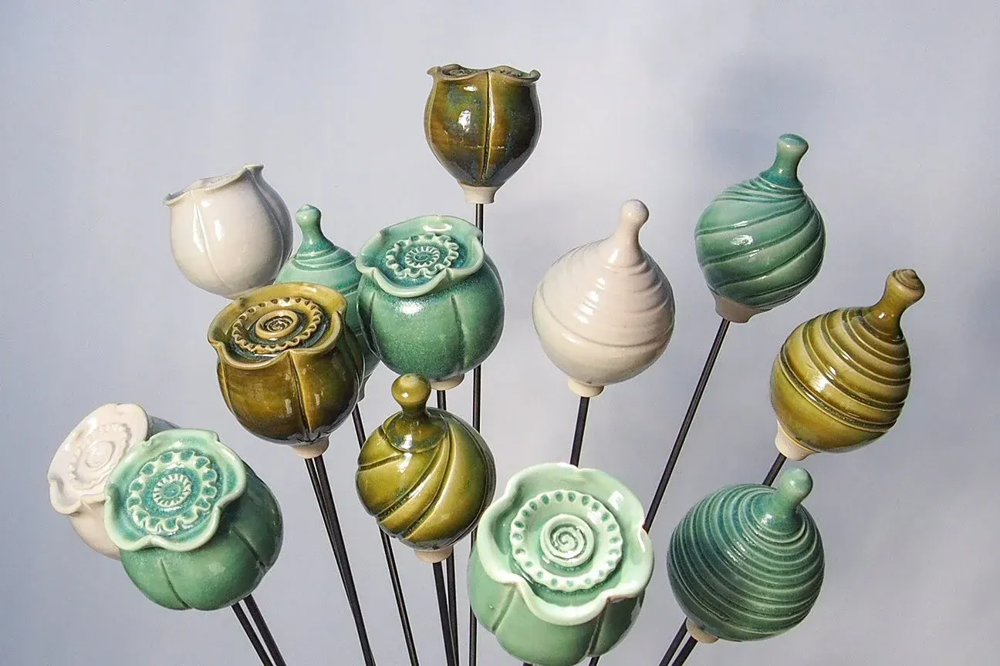
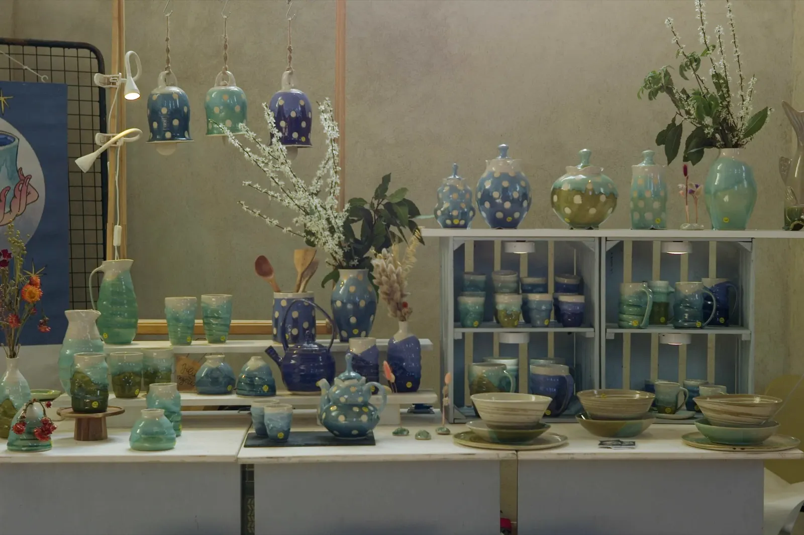

Le bestseller : les tasses en grèsTasses
Ses courbes simples, ses teintes naturelles racontent la terre et le feu. Elle accueille les matins calmes, les pauses suspendues, les infusions partagées.
Voir les tasses
Cruche, gobelets, plats et saladier en grèsJulie Devoyer, céramiste à Forges de Lanouée
Chaque pièce est en grès et façonnée à la main : tasses, gobelets, plats, cruches et décorations, pour le quotidien.
« Formée à Barcelone et à Séné, je puise mon inspiration dans la mer. »
Julie Devoyer
Chaque objet naît au tour, où j'aime lui insuffler des ondulations douces et organiques, signature de mon travail. Je recherche la justesse du geste, cette finesse qui permet de modeler la matière encore malléable, de la faire vibrer.
Mes émaux bleu profond, vert d'eau ou olive développent à la cuisson de délicates micro-cristallisations qui captent la lumière : chaque pièce est unique.

Au tour, un vase élancé prend forme.

Cinq bols, la spirale du tournageDes pièces utilitaires et décoratives en grès blanc, inspirées par la mer et les éléments. Ouvrez une famille pour voir toutes les pièces.

Le bestseller : les tasses en grèsSes courbes simples, ses teintes naturelles racontent la terre et le feu. Elle accueille les matins calmes, les pauses suspendues, les infusions partagées.
Voir les tasses
Le bleu profond dialogue avec l'argile, le vert d'eau caresse les crêtes, et la blancheur du grès éclaire les formes.
Voir les plats
Élancée, généreuse, la cruche est tournée lentement et cuite à haute température. Les gobelets, façonnés un à un, portent la trace de l'humain.
Voir les cruches Voir les gobelets

Sculptées, tournées, émaillées, elles flirtent avec le végétal, la mer ou l'abstraction. Elles n'ont pas toujours de fonction, mais elles ont toujours une présence.
Voir les décorationsInspirés des graines de pavot ou sculptés en sphères douces, ces ornements se piquent dans l'herbe, entre les pierres ou au creux d'un massif. Ils résistent au froid, au vent, au temps.

Boules et fleurs de pavot, sur tiges« Ils ne cherchent pas la perfection, mais la beauté dans l'imperceptible. »
Julie Devoyer, à propos de ses gobelets

Sur un stand d'expositionPour une collaboration, une visite de l'atelier ou simplement dire bonjour, écrivez-moi : je vous réponds dans les plus brefs délais.